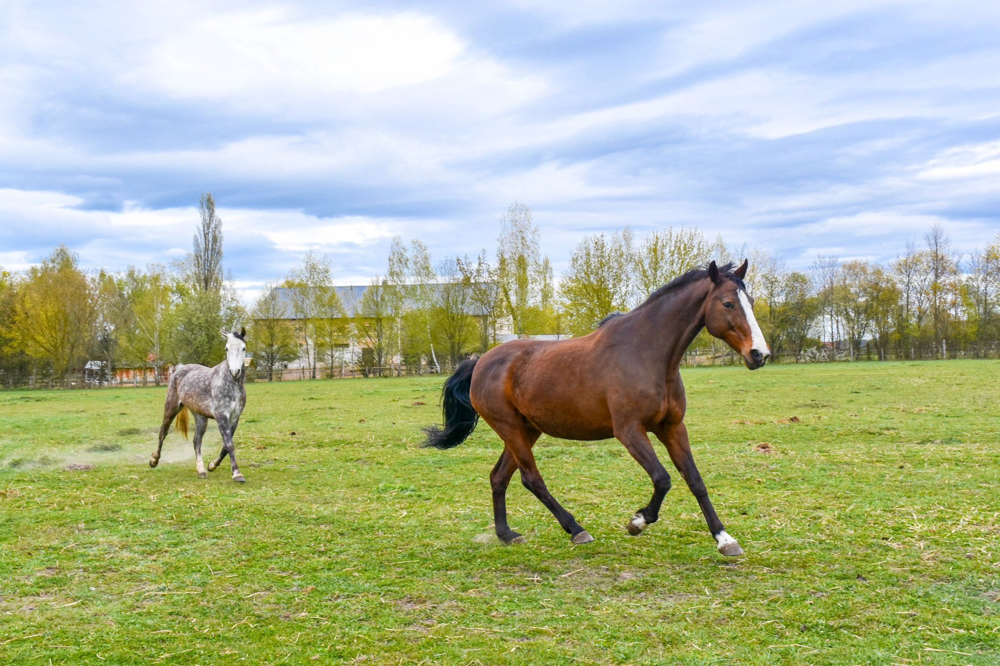

Wynajem alpak i koni
Dowozimy naszych podopiecznych do miejsca wskazanego przez zamawiającego. Oferujemy oprowadzanki konne i towarzystwo naszych trzech alpak.
Dowiedz się więcej
Od 1989 roku prowadzimy zajęcia jeździeckie, rehabilitację konną, półkolonie oraz wynajem alpak i koni w sercu Podlasia.
Poznaj naszą ofertęOdkryj, co przygotowaliśmy dla Ciebie i Twojej rodziny w Kisielnicy k. Łomży
Dowozimy naszych podopiecznych do miejsca wskazanego przez zamawiającego. Oferujemy oprowadzanki konne i towarzystwo naszych trzech alpak.
Dowiedz się więcejMalownicze trasy przez lasy i łąki Podlasia. Rajdy terenowe dla jeźdźców na każdym poziomie zaawansowania.
Dowiedz się więcejWkrótce...
Dowiedz się więcejOśrodek Jeździectwa i Rehabilitacji Konnej w Kisielnicy to miejsce z ponad 35-letnią tradycją. Położony w malowniczej okolicy Podlasia, w otoczeniu lasów i łąk, oferujemy wyjątkowe warunki do nauki jazdy konnej oraz rehabilitacji konnej.
Naszą misją jest dzielenie się pasją do koni oraz pomaganie osobom z niepełnosprawnościami poprzez kontakt z tymi wspaniałymi zwierzętami. Zapraszamy zarówno początkujących, jak i doświadczonych jeźdźców.
Poznaj nas bliżejDziałamy nieprzerwanie od 1989 roku, szkoląc setki jeźdźców i pomagając w rehabilitacji.
Nasi instruktorzy i terapeuci posiadają certyfikaty i wieloletnie doświadczenie w pracy z końmi.
Bezpieczeństwo jeźdźców i koni jest naszym priorytetem. Stosujemy sprawdzony sprzęt i procedury.
Malownicze tereny Podlasia, otoczone lasami i łąkami — idealne miejsce na kontakt z naturą.